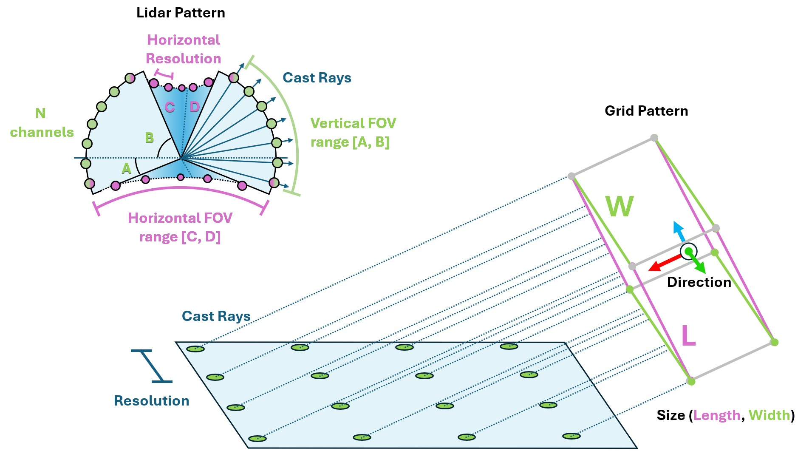
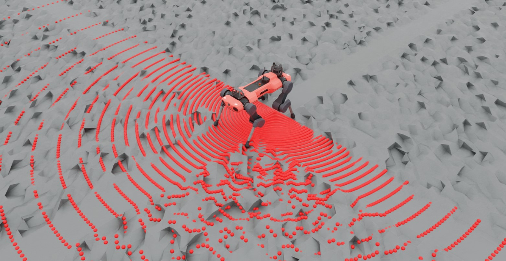

射线投射器#

射线投射器传感器（以及射线投射相机）与基于 RTX 的渲染类似，都涉及射线投射。不同之处在于，射线投射器传感器仅返回沿射线方向的碰撞信息，并且可以指定每条射线的方向。射线不会发生反射，也不会受到材质或透明度等因素的影响。对于传感器指定的每条射线，都会沿其路径进行跟踪，并返回与指定网格的首次碰撞位置。我们的一些四足机器人示例使用此方法来测量局部高度场。
射线投射的实现取决于物理后端。在 PhysX 和 OV PhysX 上，配置的网格会在传感器初始化时加载到 Warp ，且必须保持静止。在 Newton 上，传感器查询实时场景的 BVH，因此能够感知所在环境中的所有碰撞形状、全局地形和动态刚体。Newton 会忽略 mesh_prim_paths ；可使用 isaaclab_newton.sensors.NewtonRaycastSensorCfg 明确指定这一行为，并访问 Newton 特有的选项。
使用射线投射器传感器需要指定 模式（pattern） 并附加到一个父级变换（parent xform）。模式定义了射线的投射方式，而主元（prim）属性定义了传感器的方向和位置（可以通过额外偏移实现更精确的放置）。Isaac Lab 支持多种射线投射模式配置，包括通用激光雷达（LIDAR）模式和网格模式。
@configclass
class RaycasterSensorSceneCfg(InteractiveSceneCfg):
"""Design the scene with sensors on the robot."""
# ground plane
ground = AssetBaseCfg(
prim_path="/World/Ground",
spawn=sim_utils.UsdFileCfg(
usd_path=f"{ISAAC_NUCLEUS_DIR}/Environments/Terrains/rough_plane.usd",
scale=(1, 1, 1),
),
)
# lights
dome_light = AssetBaseCfg(
prim_path="/World/Light", spawn=sim_utils.DomeLightCfg(intensity=3000.0, color=(0.75, 0.75, 0.75))
)
# robot
robot = replace(ANYMAL_C_CFG, prim_path="{ENV_REGEX_NS}/Robot")
ray_caster = RayCasterCfg(
prim_path="{ENV_REGEX_NS}/Robot/base",
update_period=1 / 60,
offset=RayCasterCfg.OffsetCfg(pos=(0, 0, 0.5)),
mesh_prim_paths=["/World/Ground"],
ray_alignment="yaw",
pattern_cfg=patterns.LidarPatternCfg(
channels=100, vertical_fov_range=[-90, 90], horizontal_fov_range=[-90, 90], horizontal_res=1.0
),
debug_vis=bool(args_cli.visualizer),
)
请注意，模式配置的单位是 度（degrees） ！此外，我们在此启用了可视化，以便在渲染时直观展示模式，但这并非必需项，实际应用中应禁用此功能以优化性能。

与其他传感器类似，可以在仿真运行时查询射线投射器传感器的数据。
def run_simulator(sim: sim_utils.SimulationContext, scene: InteractiveScene):
.
.
.
# Simulate physics
while sim.is_running():
.
.
.
# print information from the sensors
print("-------------------------------")
print(scene["ray_caster"])
print("Ray cast hit results: ", scene["ray_caster"].data.ray_hits_w)
-------------------------------
Ray-caster @ '/World/envs/env_.*/Robot/base/lidar_cage':
view type : <class 'isaacsim.core.experimental.prims.xform_prim.XformPrim'>
update period (s) : 0.016666666666666666
number of meshes : 1
number of sensors : 1
number of rays/sensor: 18000
total number of rays : 18000
Ray cast hit results: tensor([[[-0.3698, 0.0357, 0.0000],
[-0.3698, 0.0357, 0.0000],
[-0.3698, 0.0357, 0.0000],
...,
[ inf, inf, inf],
[ inf, inf, inf],
[ inf, inf, inf]]], device='cuda:0')
-------------------------------
这里可以看到传感器返回的数据。首先，注意数据开头和结尾各有 3 个闭括号，这表明数据按照传感器的数量进行了批处理。射线投射模式也被展平，因此数组的维度为 [N, B, 3] ，其中 N 是传感器数量， B 是模式中投射的射线数量，3 代表投射空间的维度。最后，注意到投射模式的前几个值是相同的，这是因为激光雷达模式是球形的，而我们指定的视场（FOV）为半球形，因此包含极点。在这种配置下， "展平模式" 就很明显: 前 180 个条目是相同的，因为它们对应于该半球的底部极点，并且由于我们的水平视场为 180 度、分辨率为 1 度，所以共有 180 个条目。
您可以使用此脚本实验不同的模式配置，并通过更改第 81 行的 triggered 变量，直观理解数据的存储方式。
raycaster_sensor.py 的代码
1# Copyright (c) 2022-2026, The Isaac Lab Project Developers (https://github.com/isaac-sim/IsaacLab/blob/main/CONTRIBUTORS.md).
2# All rights reserved.
3#
4# SPDX-License-Identifier: BSD-3-Clause
5
6"""Cast a lidar-style ray pattern against rough terrain."""
7
8import argparse
9from typing import TYPE_CHECKING
10
11import torch
12
13import isaaclab.sim as sim_utils
14from isaaclab.app import add_launcher_args, launch_simulation
15from isaaclab.assets import AssetBaseCfg
16from isaaclab.physics import PhysicsCfg
17from isaaclab.scene import InteractiveSceneCfg
18from isaaclab.sensors.ray_caster import RayCasterCfg, patterns
19from isaaclab.utils import configclass, instantiate, replace
20from isaaclab.utils.assets import ISAAC_NUCLEUS_DIR
21
22from isaaclab_assets.robots.anymal import ANYMAL_C_CFG
23
24if TYPE_CHECKING:
25 from isaaclab.scene import InteractiveScene
26
27parser = argparse.ArgumentParser(description="Example on using the raycaster sensor.")
28parser.add_argument("--num_envs", type=int, default=1, help="Number of environments to spawn.")
29parser.add_argument("--log_interval", type=int, default=100, help="Steps between compact sensor summaries.")
30parser.add_argument("--max_steps", type=int, default=-1, help="Stop after this many steps; negative runs forever.")
31parser.add_argument(
32 "--physics",
33 default="isaacsim_physx",
34 choices=["isaacsim_physx"],
35 help="Physics backend.",
36)
37add_launcher_args(parser)
38parser.set_defaults(visualizer=["kit"])
39args_cli = parser.parse_args()
40if args_cli.log_interval < 1:
41 parser.error("--log_interval must be at least 1.")
42if args_cli.max_steps == 0 or args_cli.max_steps < -1:
43 parser.error("--max_steps must be positive or -1.")
44
45
46@configclass
47class RaycasterSensorSceneCfg(InteractiveSceneCfg):
48 """Design the scene with sensors on the robot."""
49
50 # ground plane
51 ground = AssetBaseCfg(
52 prim_path="/World/Ground",
53 spawn=sim_utils.UsdFileCfg(
54 usd_path=f"{ISAAC_NUCLEUS_DIR}/Environments/Terrains/rough_plane.usd",
55 scale=(1, 1, 1),
56 ),
57 )
58
59 # lights
60 dome_light = AssetBaseCfg(
61 prim_path="/World/Light", spawn=sim_utils.DomeLightCfg(intensity=3000.0, color=(0.75, 0.75, 0.75))
62 )
63
64 # robot
65 robot = replace(ANYMAL_C_CFG, prim_path="{ENV_REGEX_NS}/Robot")
66
67 ray_caster = RayCasterCfg(
68 prim_path="{ENV_REGEX_NS}/Robot/base",
69 update_period=1 / 60,
70 offset=RayCasterCfg.OffsetCfg(pos=(0, 0, 0.5)),
71 mesh_prim_paths=["/World/Ground"],
72 ray_alignment="yaw",
73 pattern_cfg=patterns.LidarPatternCfg(
74 channels=100, vertical_fov_range=[-90, 90], horizontal_fov_range=[-90, 90], horizontal_res=1.0
75 ),
76 debug_vis=bool(args_cli.visualizer),
77 )
78
79
80def run_simulator(sim: sim_utils.SimulationContext, scene: "InteractiveScene") -> None:
81 """Run the simulator."""
82 # Define simulation stepping
83 sim_dt = sim.get_physics_dt()
84 count = 0
85
86 while sim.is_running() and (args_cli.max_steps < 0 or count < args_cli.max_steps):
87 if count % 500 == 0:
88 # reset the scene entities
89 # root state
90 # we offset the root state by the origin since the states are written in simulation world frame
91 # if this is not done, then the robots will be spawned at the (0, 0, 0) of the simulation world
92 root_pose = scene["robot"].data.default_root_pose.torch.clone()
93 root_pose[:, :3] += scene.env_origins
94 scene["robot"].write_root_pose_to_sim_index(root_pose=root_pose)
95 root_vel = scene["robot"].data.default_root_vel.torch.clone()
96 scene["robot"].write_root_velocity_to_sim_index(root_velocity=root_vel)
97 # set joint positions with some noise
98 joint_pos, joint_vel = (
99 scene["robot"].data.default_joint_pos.torch.clone(),
100 scene["robot"].data.default_joint_vel.torch.clone(),
101 )
102 joint_pos += torch.rand_like(joint_pos) * 0.1
103 scene["robot"].write_joint_position_to_sim_index(position=joint_pos)
104 scene["robot"].write_joint_velocity_to_sim_index(velocity=joint_vel)
105 # clear internal buffers
106 scene.reset()
107 print("[INFO]: Resetting robot state...")
108 targets = scene["robot"].data.default_joint_pos.torch
109 scene["robot"].set_joint_position_target_index(target=targets)
110 scene.write_data_to_sim()
111 sim.step()
112 count += 1
113 scene.update(sim_dt)
114
115 if count % args_cli.log_interval == 0:
116 hits = scene["ray_caster"].data.ray_hits_w.torch
117 valid = torch.isfinite(hits).all(dim=-1)
118 print(f"[INFO] step={count} ray hit rate={valid.float().mean().item():.1%}")
119
120
121def main() -> None:
122 """Run the ray-caster example."""
123 with launch_simulation(cfg=PhysicsCfg(), launcher_args=args_cli) as physics_cfg:
124 sim_cfg = sim_utils.SimulationCfg(dt=0.005, device=args_cli.device, physics=physics_cfg)
125 sim = sim_utils.SimulationContext(sim_cfg)
126 sim.set_camera_view(eye=[3.5, 3.5, 3.5], target=[0.0, 0.0, 0.0])
127 scene_cfg = RaycasterSensorSceneCfg(num_envs=args_cli.num_envs, env_spacing=2.0)
128 scene: InteractiveScene = instantiate(scene_cfg)
129 sim.reset()
130 print("[INFO]: Setup complete...")
131 run_simulator(sim, scene)
132
133
134if __name__ == "__main__":
135 main()